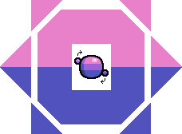
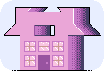
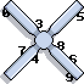
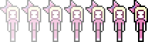

1. The Introduction
The star has ascended. Weektime has awakened.Weektime is a town that grips a man by his hands. It lifts the top from his head and throws him into a polarized state. He greets the world at his top voice.
Numbers scrape against the windows of buildings. They've been waiting for this.
2. Father #25

His morning alarm sounds, and it turns him around. It's useless - he is already awake. It's hard to sleep with sensation on your shoulders.
He enters the outdoors and waves to the youthful 10 knocking on a nearby window. He feels much more comfortable about the numbers. Weektime is the home to a very wide variety of these. They're three-dimensional, and they float, but they probably don't work as friends. They ignore him, for the most part.
Dutom does not want to speak today. He decides to catch a train and drift off into the south.
3. South of Pink
Temper is Dutom's favorite train in the world, because it penetrates the purple universe. The numbers exist in a greater concentration there.He enters quietly and sits beside an attractive individual, though not on the same seat, for that would be too bold. Her hair looks to ask an unmistakably blond question, wrapping flawlessly around the towering bow just above it. The bow gives a pink answer, but the exhange feels compatible anyhow.
The numbers do not take notice. He brought a few along with him, but they aren't so interested in the train or its passengers.
4. 60°F
This place has no official name, but Dutom likes to call it Felis Cactus. It came to him during a moment when there were many things in his eyes.
Young orange cats run from the fog to tell him nothing in particular. There also, of course, appears to be no end to the numbers. It always seemed an infinitely wide range to him. There are plenty of cacti too, as one might guess about the place.
Dutom sits by the river and presses well into his thoughts. A kitten sits up beside him and pushes his interest forward. Seems like a perfect cat to him. It cares.
5. 24th Rising of the Pink Sun
Her father had already killed himself a month before these events, and her mother was ready to burst in several fashions. It was probably only a matter of time.
In the early morning, Happy nearly woke up to her mother's hand. Not entirely, though. Her mind never escaped from the dream, as she was still somewhere on the border between sleeping and waking, but before she could interpret anything she was out the door and hitting the seat of a car.
6. Hypnopomp 1
Suddenly, nothing made any particular sense.Canning fell backwards into her mind but swam for the light, using the friction of her wrists to force forward a pair of suns. There were a quantity of voices - they told her to inch off and rise above the raging crowd. They could have meant anything, but she could hear a threatening tone hovering around.
It was a special moment, because the symbols faded off into the distance behind her. She forgot them and pressed on.
It was just about 4:00 AM in her mind. Everybody was still asleep, but Happy's face was a new day.
7. Hypnopomp 2
Her head took notice of the future and dimmed itself.Happy was already forgetting the sound of her mind, and the tungsten claw's flattening massage. She used to enjoy showing emotion, even while under these clear restrictions. But suddenly it's been lifted, and action has fallen to a chore rather than a privelage. Could the claw be permanently stuck?
This was a pretty vague thought, but only due to context. She pressed her eyes against one of the car's windows and watched the world shift by her. It was beautiful, but she knew it wasn't actually there. Mental illness is a slight bummer.
8. Hypnopomp 3

And she definitely dreaded the sunset. (4) She wanted it to go away.
9. Hypnopomp 4
Everything was moving very fast.Happy asked her mother for the time of day and received a 5. She asked how many clouds were going to press her patience that day and received a confused reply. She added, to clarify, that her friends were going to meet her at the end of this road. But still, she continued, they were very different and infinitely interesting compared to the blue side of the fence.
She didn't get much of a reply that time. Her mother wasn't paying attention to anything, not even the road.
10. Hypnopomp 5
She felt the morning escaping from her cheeks, but it wasn't urgent. Nothing could make her smile. There used to be things that could make her smile, but the illness took that away and left her brain in a state of perpetual irritation.She told her mother about everything she was forgetting, though not in any detail. It didn't change much. Everything was silent and beautiful, but it wasn't worth anything. She explained the colors, and how they were independent. The animals, and their melodic voices, pressing against the ground with hopes and love and burning flesh that catapult into the next universe.
Her mother rolled her eyes. This wouldn't go on for much longer.
11. Hypnopomp 6

12. Hypnopomp 7
Happy was drifting in and out of sleep, but neither state made much more sense than the other. Time began to crawl, as if expanding. It was all very dull, and that remained true, until the car crashed.Everything disappeared into the empty purple world behind her. Her mother was gone, the car was gone, and she couldn't quite decide who she was.
However, she found something new in this mess. The colors changed. The sun peeked at the landscape. Life began again.
13. 24th Rising of the Blue Sun
Below the border, another new day begins. Its name is Pet, though not quite yet. First she needs to hop the horizon. The world waits outside, pulling at the wall with delicate patience.There's something strange about pulling up the sun. It doesn't actually need to be pulled, as its own effort is fine enough. More importantly, however, this has been a nonsense decision from the beginning. Surely the sun seems well-intentioned, but this, here - this is nothing more than a bright, blue monster.
A very cute one, though. It almost cries a tune when it arrives.
14. In Love With Being Born
Richary decides to name her Pet, and take her on a trip into an abstract place. Amery doesn't appear to mind any of this; she, in fact, tells him so. She says, in her own satisfying mess, that this is not her game. She hums a few unrecognizable tunes.
15. Escaping the Silence 1
Pet loves noise. She is nowhere without the stimulation of a few hundred voices. They press deep and cancel out the world.Silences are dreadful.
Only days after finding the universe for the first time, she's finding another one. And she wants it gone. It comes in through cracks in the air and circles her head. She'll often look off into space and find the symbols dancing in their three-dimensional territories. They're like winners - they've found her. It's distracting.
But she loves lying in her father's arms, charging through this tight, loud world. Somehow, by seeing everything at once, she sees nothing at all.
16. Return Again and Again
Pet isn't going to sleep tonight. The room is too quiet for her. It's hollow and it stretches like a free man; well in contrast to her comfortable outdoor pressure spaces, where the bombardment keeps her numb and sensation is obscured by sensation.Richary and Amery press forward through the night, trying to ease her into a dream, but nothing changes. Pet tries to create her own noise, and the room lights up with it. She falls into something strange, and it fights out through her mouth. She screams.
Amery screams back at her. It becomes sort of competitive. Hostility grows in this room.
17. Escaping the Silence 2
The next morning, Pet meets the sky again.Her father scrambles to find people. Nobody specific, but they need to be loud and everywhere. He goes to the park and runs into large crowds. When they ask him about it, he tells them that he's trying to implant society into his daughter's fresh subconcious - better to get a head start! Wouldn't want her to miss out!
But no, that's not it. He's just aware, at this point, of Pet. She will stay silent, so long as nobody else does.
18. Silence (And Again)
Richary isn't a fan of talking to people, but he doesn't mind watching them. He keeps on and enjoys himself mildly.They seemed so happy in the morning, but now they lack something. They fade and turn into everything else, and soon the feed is dry. Stimulation! - this is what they lack now. Noise, chatter, and motion. It's too late now. The night can't provide this to Pet, yet she's far from done.
And Richary is definitely over. He's already gone two days without sleeping, and this is pressing it. He can barely walk home, and Pet is still sending her signal.
19. Don't Sleep Too Long
For one moment, Richary is standing next to his daughter in a field of pink light, pushing upwards at the sky and leaving him one inch off from the surface. He turns and finds her face pressing in, shaping into something emptier and adapting to silence. He tries shaking off this hallucination, but it doesn't respond.The image vanishes, and he finds his body on the edge of his bed, ready to fall asleep again. He has walked all the way home without even remembering. He hears Pet crying in another room, so he brings himself up to deal with it.
He finds Amery, holding Pet in her arms. They both look very beautiful to him. Amery tells him to sleep and let her handle this wonder, and so he does.
20. Bare Eyeballs
That night, Richary's dream takes place on the other side. He sends himself forward with a nervous mind and saves his daughter from trouble (the exact trouble being undefined in the dream - it was merely implied). He puts out his arm for her, but she has no response. Somehow, there is nothing to offer for an empty girl.He falls into a silent, calm world, then comes back to the dream again.
In the next moment, he burns his daughter alive and runs off with satisfaction. He falls into the calm world again. The next morning he shrugs it off.
21. Sun is Out
The sun was finally peeking in again. Vocal Marole was returning to Weektime and sticking around for some lengthy period of time. Lista, being nine years old, had never met Vocal Marole before. It was her very first sunrise experience.
It was very exciting, but somehow her sister was worried. She'd been warning and pressing about this day, but had now fallen to submission.
22. A Star's Morning Energy
Her dreams cleared out and the horizon drew itself below her. Happy Canning woke up and rose to the world again, but it seemed very different. Her feelings flattened out into a thin empty sheet. The grass seemed a very dull green, and the train sat mildly without invitation.Yes, and the train waited. It waited without a smile. Its doors opened and it almost looked like the only option. She took her time, but soon stepped inside.
When she sat down, a pair of girls lifted themselves to her, one of them outwardly fascinated. The other, fatter and lower in expression, dropped back down. Happy didn't get much from this, so she turned away.
23. Hollow Bodies
The smaller one introduced herself as Lista. The fatter one was Lasset. They were sisters, they said. They came to pick her up and take her into something special and beautifully presented. Those were the words Lista said, anyway. Canning didn't think anything of it.They called her Vocal Marole and put her in some kind of magical spotlight in their minds. It wasn't a world Happy wanted to be in, this magical place, so she didn't listen to most of the words. But they were apparently letting her stay in some house while she pressed her beauty on them, or something like that.
Lista was ignorant and grating. Lasset was slow, and contributed very little. But they were both lacking some kind of value. She felt like there was something important to look for here, but it wasn't in either of them.
24. Cold

When the train stopped, they brought Happy out into a town they called Weektime. It all seemed to limp forth, but without any certain direction. The town was bright, but Happy couldn't push herself to take it in.Lista dragged her along and kept talking about their father. His name was Gerto-Patent and he was apparently tall, wide, and amazing. Lasset objected and said he was an average piece of garbage, though quitely and in less satisfying words.
They stopped and Lista pointed at a pink house. That's it, right there! she said.
25. Light Protection
They stepped inside. Lista tripped over herself and pointed at the pink wall, like it was a masterpiece and demanded eyes. There were pictures of pressing memories up with everything else, hanging down.
She ran off to feel around for the attention of her father, and found him beside the door to his room. He readied himself and stepped out.
She noticed something difficult about his eye sockets - they were covered entirely by a pair of unfamiliar pink stickers. He lacked the same emotion without his eyes, like something was plugged up.
26. Counting Backwards
When he felt her distinct magic, he took hold and wrapped himself around her. He could hear Lasset sigh, but it didn't bother. Nobody was looking at Happy, but he could only imagine her expression at that moment.
It often confused him, how he could so easily recognize her skin every time. After all, this was a completely new and fresh Vocal Marole. New day, new body. Perhaps nothing changes in her, aside from her name.
27. The Vocal, Excerpt 1
"Effects of prolonged eye exposure can span from depression and fatigue to various dangerous states of mind. Bare eyes can be viewed as a sign of carelessness, or even evil (the most pressing example being the Suntanned Whore's disregard for eye protection).
"Unfortunately, this warning is often skipped. Sunblocks have become unfashionable. The risk, however, has not diminished. Please keep this issue in mind and stay from Vocal Marole for as long as your eyes lie open and undivided from the air."
28. Two Metallic Voices

There are symbols lying on the ceiling fan, and they are probably aware of it. Pet draws a couple of them out with her eyes:7 4
The first symbol looks cool and sharp. The second symbol looks weak and dependent. 7 doesn't care, but 4 needs to care.
Or perhaps 7 also needs to care, but it doesn't know how.
29. Musical Ears
Eventually Pet takes a liking to one chord in particular. Amery joins in appreciation and plays it louder, lacking the wakefulness to stay free from her daughter's mind. The two brains seem to blend together, and for a moment they can see everything.
30. Stimulant Waves
The next morning, Amery takes a grab at Richary's role and brings Pet outdoors. She prepares herself to record the town in its loudest state and play it back for years to come. And so, with certainty, hours of rest should take place!For the moment, there is nothing. The sky is not talking. And so she runs, keeping her mind to the baby and her ears to the world.
Surely enough, as she dives into the active regions, there it lies. The noise.
31. A Previous Day to Her Fragile Memory
The sun holds itself for the next several hours.Amery waves to the loudest bunch and invites them over. She asks them to speak up to their full potential and perhaps scream a few times. They fall into a pleasant conversation about music, and as their voices become dim, Pet's voice reaches up around them.
Eventually they leave and Amery relaxes herself. Pet, at last, looks satisfied enough. All is settled and recorded.
32. Escaping the Silence 3
Pet just about slips into a colorful dream, but it doesn't work out. She can't sleep. The symbols find her arms and pull them up into the world again. The walls are close, and the room is quiet.They're not so distinct from everything else, those symbols. Eyes and ears are precious and honest, and they'll always give you truth. Here's precisely how it looks: the walls are blue and the ceiling fan is active. The figures form and fly about. Ten distinct symbols, moving in a pattern. The light is gone and done.
Nothing to save her. She screams out.
33. Sleeping Numbers
The morning isn't over, but Pet is already learning. The symbols still feel like trouble, but they seem to adore her. They express it more efficiently than anybody else has.They drop her into a river and raise her arm up into the sky, and she can feel it. The temperature is increasing at an imperceivable level, but the symbols don't press that on her. They're in this for the ride.
Pet fears for herself, but after a while, she agrees to tag along. They float into the distance, but only temporarily. The sun doesn't stay up forever.
34. 61°F
Dutom wakes up in Felis Cactus, feeling temporarily beautiful. For a moment he notices something floating along in the river, but his attention is pulled away by an adorable orange cat.Same cat as before, actually. He picks it up and thinks for a while. Unfortunately, it would be a mistake to bring this cat into his apartment. It would be an unmanagable situation.
Temper stops close by, ready to take him into Weektime. He remembers the bow, then the girl, and then the world comes back to him at once.
35. North of the Border
Dutom steps in and feels quite disappointed. The girl is not here. But he still has the clear image in his head, and decides to pull his thoughts in from the window as the world passes by.Recently, the sun has come up. Or, rather, Vocal Marole has come up. He wasn't very much interested at the time, but he knows the descriptions by heart. She wears a towering bow and comes in by train. The world waits and celebrates. And there are a few other concepts, but he's not entirely familiar.
He decides, at this moment, that he should buy a copy of The Vocal when he gets back.
36. A Marker For Her Head (Days Ago)
When Happy Canning first put on the bow, the past three days came back and told her the news. She didn't understand it, so she ignored it. It seemed to try for her attention though, and that was impressive enough.

But it was a weird moment. Suddenly she knew, perhaps vaguely, what lied ahead. It was sunshine to most people, but not from her perspective.
She is, of course, required to wear the bow. It's a bit ugly, but she's already Vocal Marole, so she figures it can't get any more ridiculous from here.